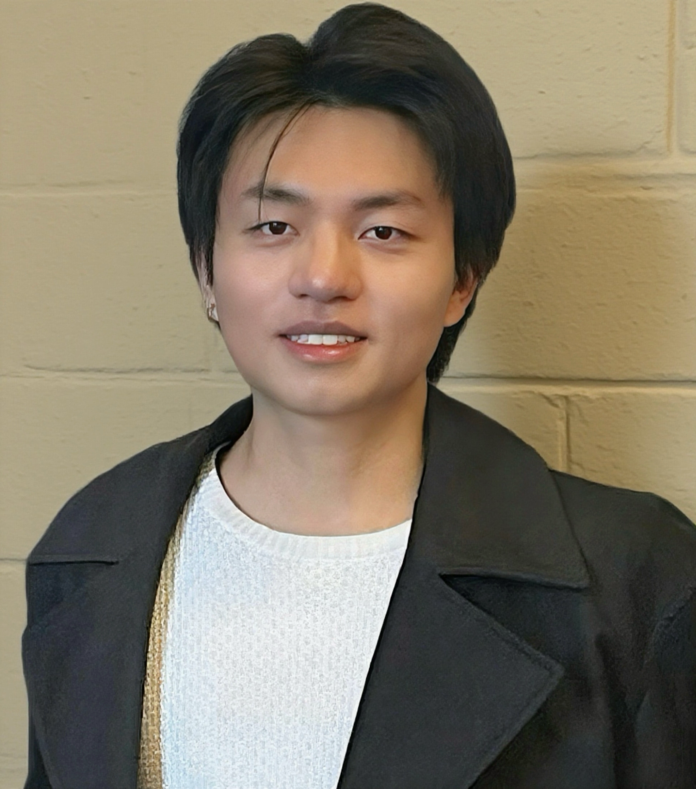
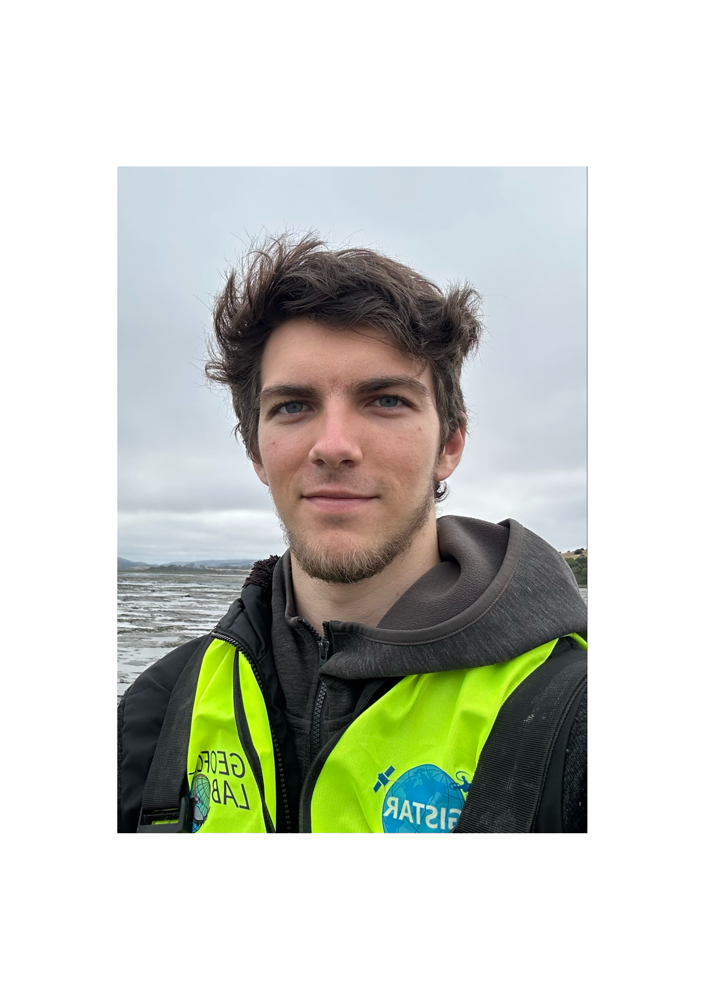
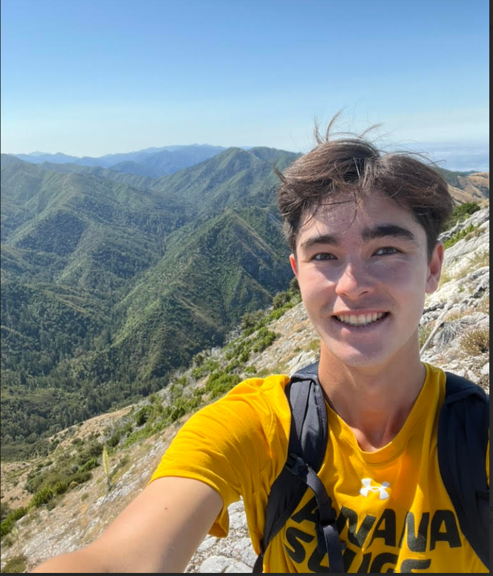
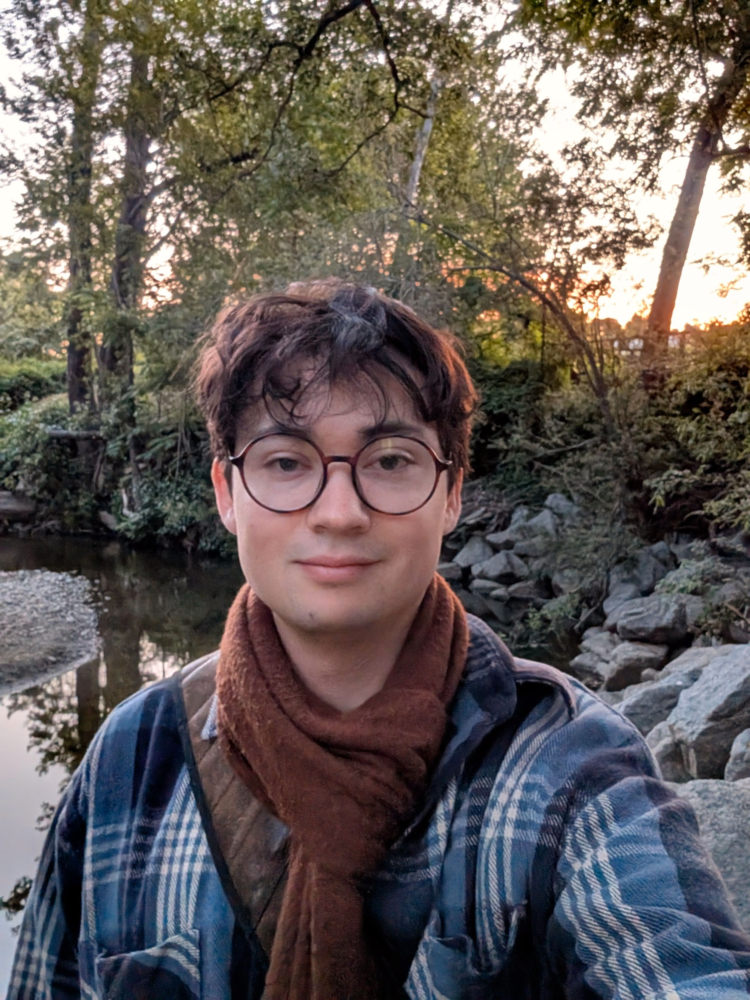
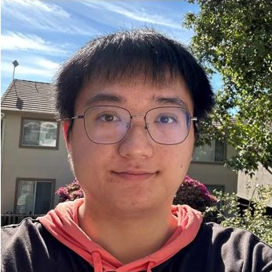
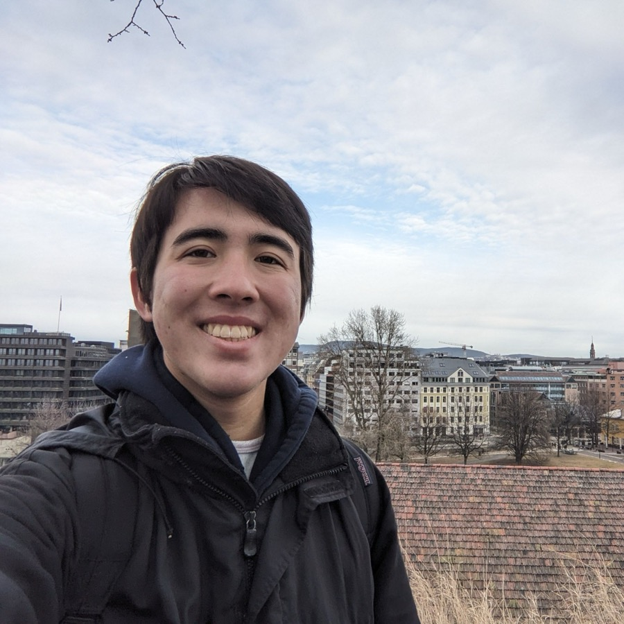

Team
Researchers and students working across GIS, remote sensing, and drone-based field science.
Current members
-
Bo Yang
Principal Investigator
Dr. Bo Yang is the Principal Investigator of GeoFly Lab and Assistant Professor at UC Santa Cruz. With background in Mathematics (BA), Computer Science (MS), and Geography (PhD), his research integrates GIS, remote sensing, UAV/drone mapping, and AI for environmental applications. Dr. Yang is committed to mentoring students through classroom teaching, fieldwork, and research experiences, fostering the next generation of geospatial scientists and developing innovative approaches for critical environmental challenges.
-
Xiangyu Ren
GIS Postdoctoral Researcher
Xiangyu Ren is a multidisciplinary geographer with a passion for GeoAI and remote sensing. She gained her Ph.D in environmental science, and a master’s degree in Geography with a concentration in Geographic Information Systems at San Jose State University. Also, Xiangyu is a certificated drone pilot. Applying her multidisciplinary knowledge and skills in geospatial analysis, she contributes in various projects involving seagrass mapping, wildfire management, and ecological consulting.
-

Yuhua Wang
Graduate student
Yuhua Wang is a Ph.D. student in Geography and Environmental Studies at UC Santa Cruz. He is working on UAV mapping of seagrass and coastal ecosystems through an interdisciplinary approach to monitor habitat health and water quality. Previously, he led projects on detecting Soybean Cyst Nematode infections using multi-scale remote sensing and on harmful algal bloom detection with UAV and satellite imagery. His long-term goal is an academic career in geography and environmental studies.
-

Griffin Svec-Burdick
Undergraduate student researcher
Griffin Svec-Burdick is an undergraduate student working on the lab’s eelgrass monitoring project through the USDA SUPERDAR program. Passionate about environmental research and stewardship, he has worked in the field with the UCSC Forest Ecology Research Plot, Alan Chadwick Garden, and Campus Natural Reserve. After being introduced to GIS last year, Griffin became interested in aerial mapping for ecological monitoring. Since then, he has obtained his FAA Part 107 drone license through the CIDER Drone Pilot Training Program and gained more experience with GIS. Griffin’s current work involves conducting drone surveys of eelgrass, processing RGB and multispectral imagery, and geospatial analysis.
-

Nathan Leroy
Undergraduate student researcher
Nathan Leroy is a USDA SUPERDAR student with the GeoFly Lab at UC Santa Cruz and a participant in the NSF Build and Broaden program. With a B.A. in Computer Science, he brings strong technical skills to his research on UAV mapping, multispectral analysis, and AI-driven geospatial methods. Nathan is developing expertise in GIS, remote sensing, and drone operations to support coastal and seagrass monitoring while advancing interdisciplinary environmental studies.
-
Denise Marc
Undergraduate student researcher
Denise Marc is the Social Media Manager for the GISTAR program and an undergraduate researcher with the GeoFly Lab at UC Santa Cruz, contributing to the NSF Build and Broaden project. She supports outreach and communication for GISTAR while developing skills in GIS, remote sensing, and UAV mapping. Denise’s work bridges science and public engagement, highlighting research advances and fostering broader participation in geospatial technologies and environmental studies.
-

Max Tcheng
Undergraduate student researcher
Max Tcheng is a NASA FireSage student intern with the GeoFly Lab at UC Santa Cruz. With a background in ecology, UAV operations, and GIS, he applies geospatial technologies to study wildfire and ecological dynamics. Max holds an FAA Part 107 drone license and has conducted research on urban wildlife, agroecology, and endangered species monitoring. Through the FireSage program, his current work centers on integrating UAV and GIS tools for wildfire research and ecological applications.
-
Tou-in Kwan
Graduate student
Tou is a graduate student at San Jose State University pursuing his Master degree in Geography. He also has a background in Urban Planning and is interested in Environmental Planning. Tou was introduced to drone mapping last year and has been passionate about it ever since. He recently participated in the West Coast Seagrass Mapping Project and is currently responsible for drone imagery analysis. Tou also serves as a teaching assistant in a graduate-level Urban Planning course, where he applies his knowledge to help fellow students.
-

Boyao Huang
Undergraduate student researcher
Boyao Huang is an undergraduate student researcher with the GeoFly Lab and a current undergraduate at San José State University. With an interdisciplinary background in physics, data science, and computer science, he contributes to the NSF Seagrass Mapping Project, developing computer vision and AI-based segmentation models for environmental monitoring. Boyao also supports lab outreach and communication through website design and development.
-

Julian Regli
Undergraduate student researcher
Julian Regli is an undergraduate student at UC Santa Cruz, studying economics and literature. After graduation, Julian will pursue a Master of Urban Planning degree at San Jose State University. In the future, Julian hopes to work in the urban planning field to make cities more environmentally sustainable. As an intern at the GeoFly Lab, Julian is developing GIS skills while contributing to an eelgrass epifauna project.
Alumni and past research assistants
- My-Thu Tran 2022 Master Graduate
- Owen Hussey 2025 Master Graduate
- Henri Brillon 2025 Master Graduate
- Jeff Wootton 2026 Master Graduate
- Jack Stevens 2024-2025 NASA-FireSage Fellow
- Ian Cook 2024 NSF Build and Broaden research assistant
- Jannike Allen 2024 NSF Build and Broaden research assistant
- Hao Lan 2024 NSF Build and Broaden research assistant
- Ashley Niemand 2024 NSF Build and Broaden research assistant
- Shaylie Lozinto 2024 NSF Build and Broaden research assistant
- Sofia Silva 2024 NASA-FireSage Summer Intern
- Zachary Ho 2024 NASA-FireSage Summer Intern
- Gisele Antunes 2024 NASA-FireSage Summer Intern
- Charlotte Higbie 2024 NASA-FireSage Summer Intern
- Melina Kompella 2023 NSF-START research assistant
- Alexis Herb 2023 NSF-START research assistant
- Devin Jones 2023 NSF-START research assistant
- William Lee 2023 NSF-START research assistant
- Jessica Reimann 2023 SJSU-Levelup Research Assistant
- Bryan Malone 2022 SJSU-Levelup Research Assistant
Join the lab. We welcome students interested in GIS, remote sensing, and drone mapping. Please email the lab with a short note about your background and interests.